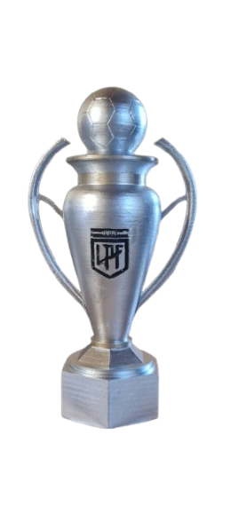
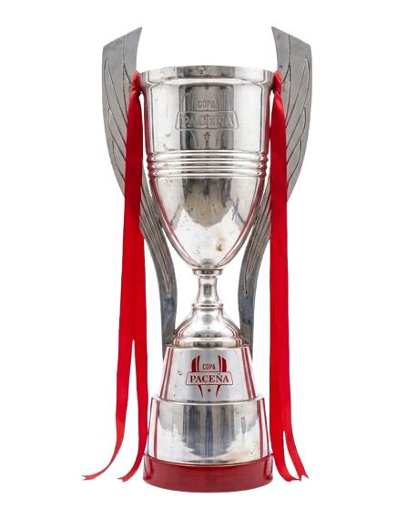
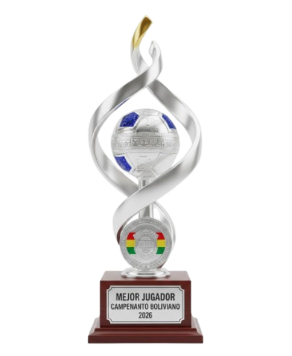

Jogos
161

Começo explosivo com o Oriente Petrolero, impacto direto em gols e assistências e uma primeira taça já no início da caminhada.
A carreira ainda está no começo, então o hub já deixa a primeira fase registrada e reserva espaço para o crescimento da seleção no futuro.


